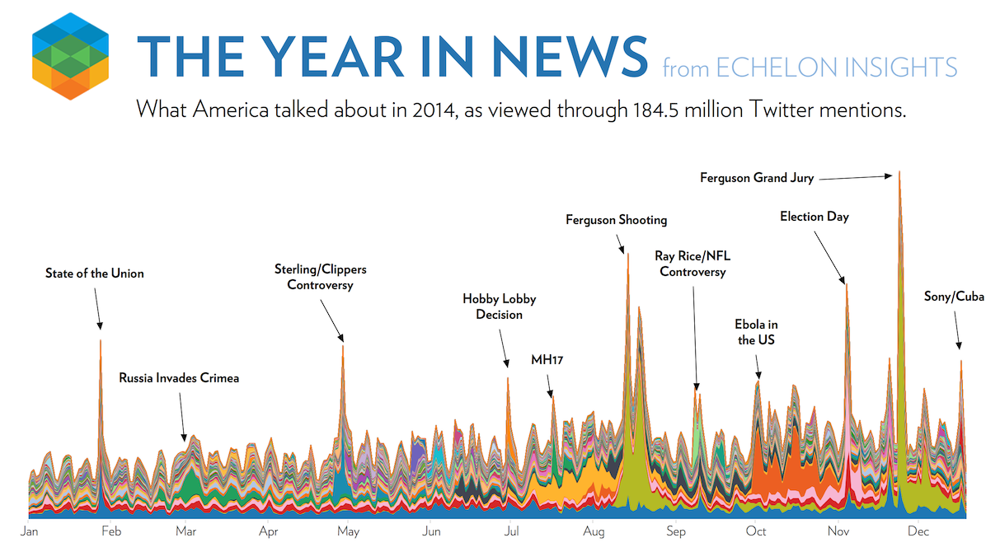
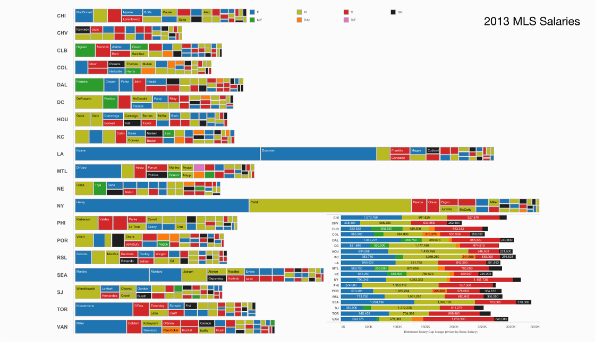
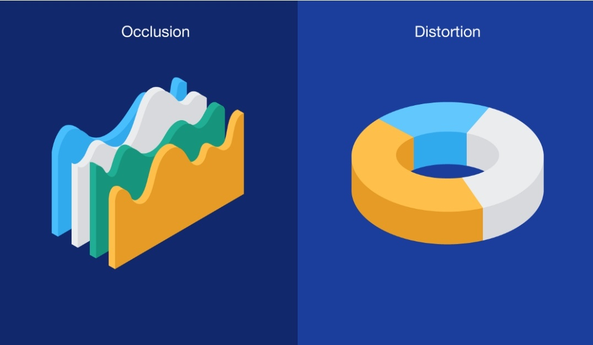
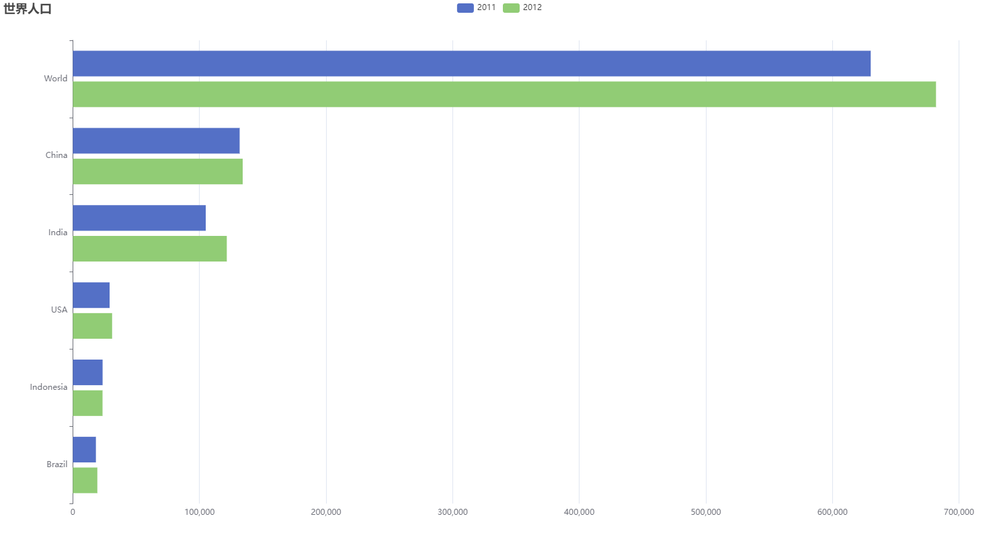
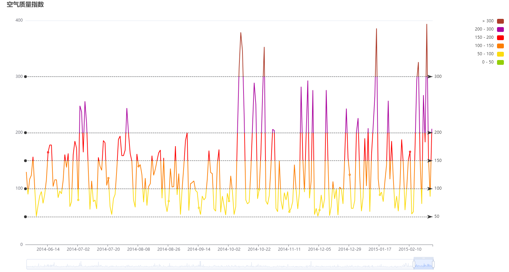
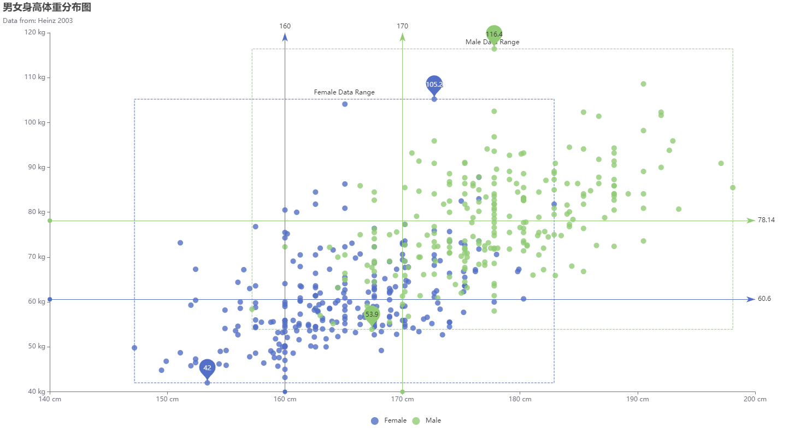
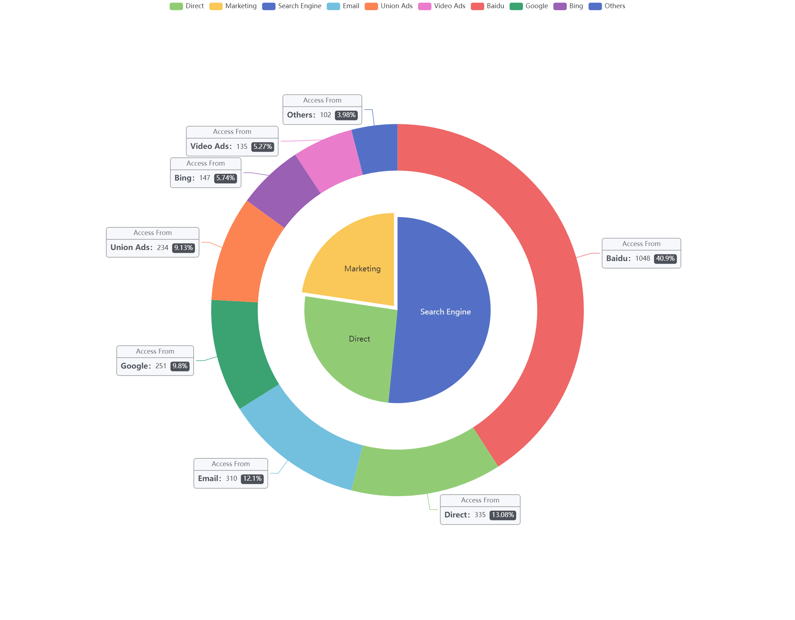
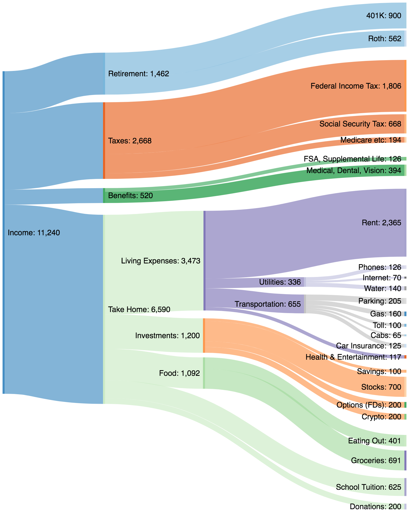
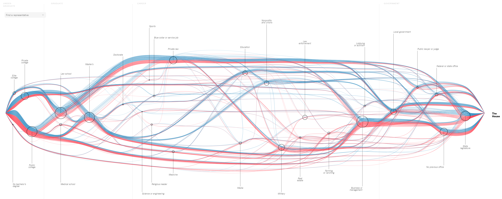

27.4. 可视化设计#
27.4.1. 可视化流程#
数据分析：数据准备用于可视化（例如，通过应用平滑滤波器、插值缺失值或校正错误测量）。这通常是计算机中心的，几乎没有用户交互。
过滤：选择要可视化的数据部分，通常是用户中心的。
映射：聚焦数据被映射到几何图元（例如，点、线）及其属性（例如，颜色、位置、大小）；实现表达和效果的关键步骤。
渲染：几何数据被转换为图像数据。
27.4.2. 可视化设计准则#
可视化设计师需要综合考虑三种非常不同的资源限制因素，分别是计算能力、人类因素以及显示器性能。
计算限制
处理时间：可视化设计必须考虑计算机的处理能力，确保生成和呈现大规模或复杂的数据可视化不会导致性能问题。快速的可视化生成对用户体验至关重要。
系统内存：大型数据集和复杂的图形可能需要大量的内存来存储和处理。设计师需要在可视化设计中谨慎使用内存，以防止系统崩溃或变得缓慢。
人的关注和记忆：设计师必须考虑人类的认知能力。信息过载可能导致注意力分散，因此设计必须注重突出显示最重要的数据，以帮助用户集中注意力并记住关键信息。
显示限制：像素是宝贵的资源：在设计可视化时，设计师必须优化像素的使用，确保信息清晰可见。不合理的像素使用可能导致图形不清晰或加载速度缓慢。设计师需要在信息的紧凑性和可读性之间取得平衡。太拥挤的图表可能难以解释，而太稀疏的图表可能无法有效传达信息。
根据数据的性质和分析目标，选择合适的可视化类型是创建有力和有效的数据可视化的关键步骤。以下是一些指导原则：
理解数据类型
了解要处理的数据类型是开始选择可视化类型的关键。不同类型的数据需要不同类型的可视化方法。定量数据，如数字和测量值，通常适合使用柱状图、折线图或散点图来表示。而定性数据，如类别或标签，更适合使用饼图、条形图或词云等可视化方式。时序数据，即随时间变化的数据，如股价、气温等，适合用瀑布图、折线图、时间轴、流程图等方式可视化。

图 27.1 2014年美国新闻热度可视化。 ©https://echeloninsights.tumblr.com/post/105911206078/theyearinnews-2014#
目标驱动选择
在决定可视化类型时，首要考虑的是分析目标，例如是否要比较值、显示趋势、发现模式、探索关系、展示分布等。
考虑受众
考虑可视化的受众是谁，以及他们需要什么样的信息。不同的可视化类型对不同的受众可能更具有说服力。考虑到受众的背景知识，要确保可视化能够满足受众的理解水平。如果受众对数据分析不熟悉，简单直观的可视化可能更有用。
数据量和复杂性
数据集的大小和复杂性也是选择可视化类型的重要因素。如果要处理大量数据点或复杂的数据结构，一些高级可视化技术，如热力图、网络图或树状图，可能更适合帮助展示和理解数据。
如图所示，单个可视化文件中的过多数据会立即使观看者不知所措。当可视化包含太多数据时，信息就会淹没，并且数据会融化成大多数观众无法忍受的图形。

图 27.2 单个可视化文件中包含过多数据会令观看者不知所措。#
一致性
保持可视化元素的一致性是重要的，包括颜色、字体、标签和图表样式。一致性有助于降低观众的认知负担，使他们更容易理解和比较不同的数据。
强调关键信息
可视化应该有助于突出展示最重要的数据和趋势。通过颜色、标签、注释和高亮显示等方式，强调关键信息有助于观众快速识别要点。
避免误导
设计师应该努力避免制造误导性的图表或图形。这包括避免截断轴、使用不恰当的比例、选择不合适的图表类型等。可视化应该真实反映数据，而不是歪曲或夸大。
如图 27.3 所示，这里的三维图形就造成了遮挡。

图 27.3 三维图形会造成遮挡。#
色彩和标签
颜色应该谨慎使用，避免过多的颜色或使用不明确的颜色方案。合适的颜色选择有助于提高可视化的可读性。每个可视化元素都应该具有清晰的标签和标题，以解释图表的含义和数据的来源。这有助于避免混淆和误解。
交互性
交互性在可视化工具中扮演着重要的角色，它使用户能够更深入地探索和理解数据，以及与可视化图形进行互动。如缩放、过滤、交互式图例、滑动条和时间轴、链接等。
经验和灵活性
查看类似领域或问题的可视化示例，以获取灵感和最佳实践。最重要的是要灵活，如果一种可视化类型不起作用，尝试其他类型。有时候，根据经验和反馈，可能需要组合多种可视化类型，以更全面地呈现数据。
27.4.3. 常见的可视化图表及工具库#
有许多可视化工具可供选择，具体取决于数据类型和可视化需求。以下是一些常见的可视化工具：

图 27.4 世界人口数量条形图。 ©Apache ECharts#

图 27.5 空气质量折线图。 ©Apache ECharts#

图 27.6 男女身高体重分布图。#

图 27.7 饼状图。#

图 27.8 工资使用情况图。 ©Reddit#

图 27.9 美国国会议员路径图。 ©The New York Times#
条形图和柱状图：用于比较不同类别的数据，如图 27.4。
折线图：用于显示数据随时间变化的趋势，如图 27.5。
散点图：用于显示两个变量之间的关系，如图 27.6。
饼图：用于显示数据的组成部分，如图 27.7。
热力图：用于显示数据的密度和分布。
地图：用于可视化地理数据。
雷达图：用于比较多个变量之间的关系。
学习可视化最好的方法是实际操作。使用真实数据集创建可视化，尝试不同的图形类型和设计选择，以提高可视化技能。有许多可视化工具和库可供使用，例如： Python中的Matplotlib 、Seaborn和Plotly。 JavaScript中的D3.js、Chart.js和Three.js。 商业工具如Tableau和Power BI。